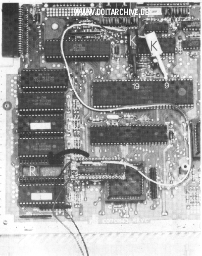
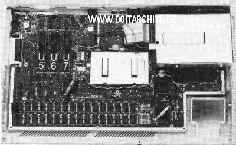
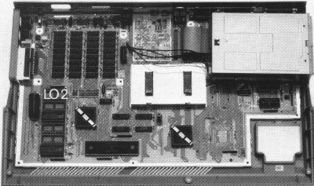
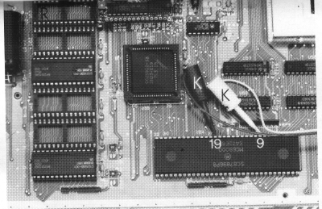

|
|
20.19 Uhr
Hardwareuhren zum nachträglichen Einbau
Einige Atarimodelle besitzen keine interne Uhr. D.h genauer, man
kann die Uhrzeit zwar nach dem Systemstart stellen, schaltet man den
Computer aus, vergisst er Datum und Uhrzeit.
Abbildung 1 - Eine Uhr unter einem Rom
Diese intern gestecken Lösungen sind ALLE besser als
Hardwareuhren die in den Romport gesteckt werde mussten. Bei der
intern Lösung ist eine lange Standzeit garantiert und es ist kein
Port belegt den man z.B als Musiker dringend braucht.
Abbildung 2 - Einbau einer MegaClock
 Abbildung 3 - Einbau einer MegaClock
 Abbildung 4 - Einbau einer MegaClock
Abbildung 5 - Einbau einer MegaClock
 Abbildung 6 - Einbau einer MegaClock
 Abbildung 7 - Einbau einer MegaClock
|


|
|